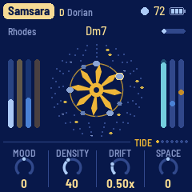

SAMSARA
An ambient piece for the M-VAVE FM-1
For Brett.
SAMSARA turns the FM-1 into a slow ambient piece that plays itself and changes over hours, in the spirit of Brian Eno's Reflection. Tone, harmony and density drift; every so often the whole piece ebbs nearly to silence and returns. It never repeats and never stands still, unless you turn Drift fully down, which holds the moment you are in.



The piece
- A breathing pad, soft bells, a gliding bass and a rare low ground come and go like weather, through a tape echo and a wandering plate.
- Four knobs: Mood (dark to bright), Density, Drift (the pace of all change; fully down, it holds) and Space (near to far).
- Four pieces: Samsara, Maranasati, Anatta and Nirvana. The keys are the scale: each key adds its note or takes it out.
SAMSARA is a fork of AMB-1 by Charles Vestal, by Tomorrow's Man. The sounds, the pages and the whole platform are AMB-1's; SAMSARA's own part is the conductor over them: the weather, the tide, the wandering harmony and tone, and the wheel on the screen.
Installing a firmware on an FM-1 is at your own risk. To go back to the official firmware, use M-VAVE's own updater, M-UPGRADE, from m-vave.com/download. M-VAVE and FM-1 are trademarks of their owners. SAMSARA is not affiliated with M-VAVE or Brian Eno.